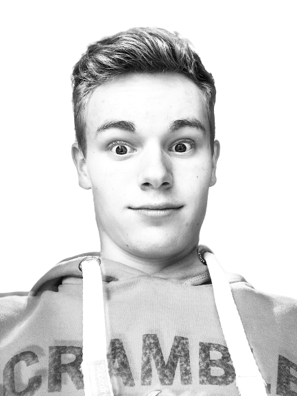

Dit is mijn eerste html project die ik gemaakt heb. Het is ter ere van mijn goede vriend Maxim. Heb dit leren maken in een goede 2 dagen, gestart op 04/01/22 en geëndigd op 06/01/22. Om dit te leren ben ik begonnen met een html crash course, een css crash course en daarna een flexbox crash course, vervolgens heb ik eerst een alles eens uitgetest om te weten wat alles doet en daarna dit gemaakt. Na deze videos met aandacht te bekijken heb je alle kennis om dit project na te maken. Je start met een html pagina zonder css en daarna doe je pas de css die nodig is voor de opmaak.
Hier is een levensles van Maxim, dit is een exclusiviteit dat we dit persoonlijk konden ontvangen van Maxim zelf.
De naam 'Claus' komt van 'Des Clausus'. Claus werd daarvan afgeleid. Dus eigenlijk noemt hij Maxim
Des Clausus,
maar men zegt Maxim Claus omdat dat korter is.
Deze nieuwe levensles hebben we ook persoonlijk ontvangen van Maxim Claus zelf
Maxim Claus werd voor het eerst ontdekt 17 jaar geleden op 13/07/'04. Sindsdien is hij gebleven en is hij een heel stuk gegroeid. En hij is ook een stuk sterker geworden.
